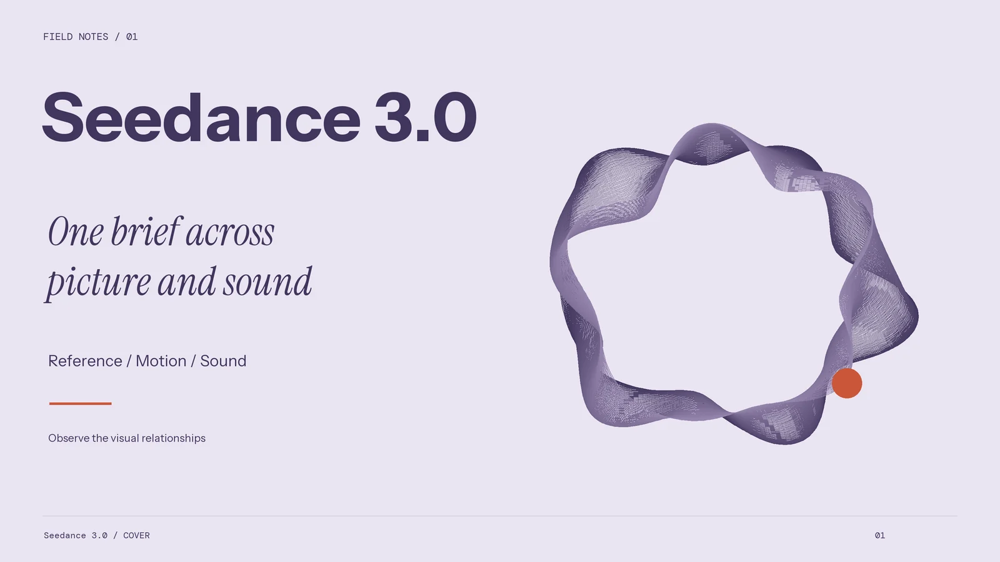
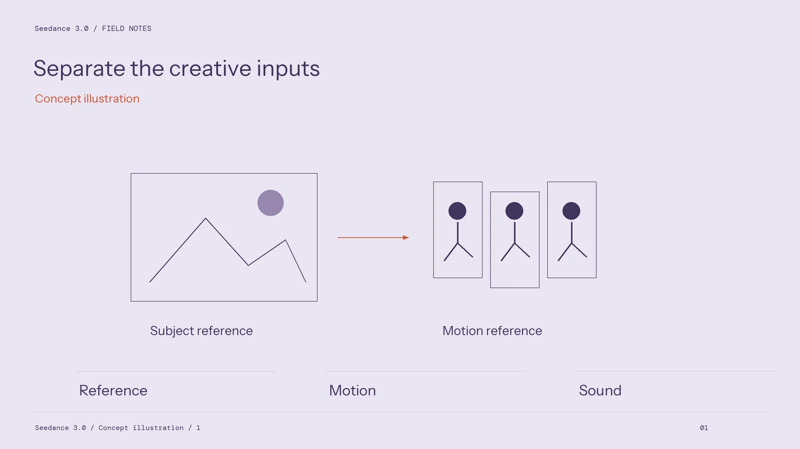
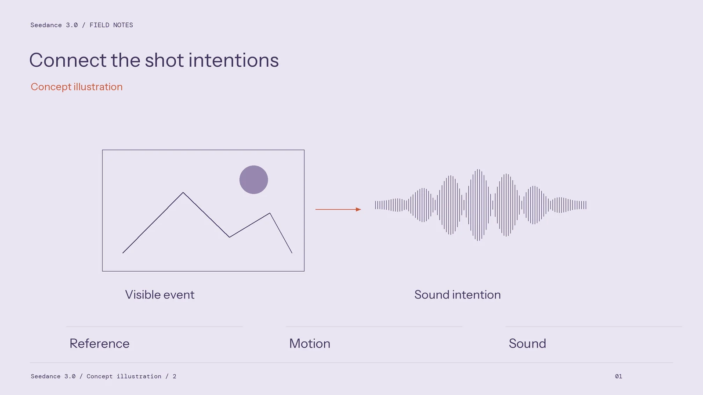
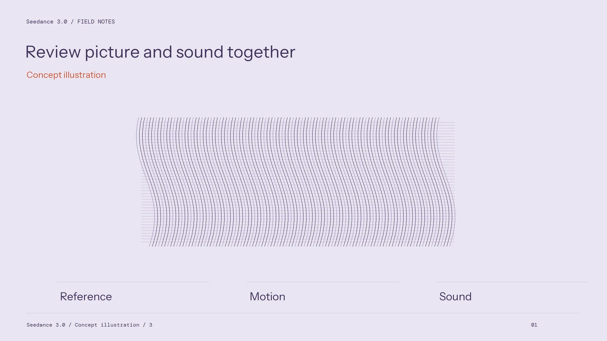

Seedance 3.0: A Practical Brief for Connected Video Scenes

A connected video scene needs more than attractive individual frames. The subject must remain recognisable, the action must develop clearly, and each cut must give the viewer useful information. A productive way to approach Seedance 3.0 is to write those requirements before choosing a generation setting. This turns a broad request for cinematic video into a brief that an editor can inspect and revise.
The site uses Seedance 3.0 as its video platform name and presents a choice of available Seedance model workflows. Treat the selected workflow, the reference materials and the intended delivery as separate decisions. The project should begin with the options actually shown in the workspace and a concrete scene, rather than an assumed specification attached to the platform name.

Give the sequence a small narrative job
Start with a change that the audience can understand. A traveller notices a light beneath a sealed door, approaches it, and pauses before touching the handle. That is enough material to plan an opening, a central action and a final image. Adding a chase, a costume transformation and a new location would create several different creative problems before the first one has been assessed.
Write a short shot card for each beat. Record the framing, subject position, visible action, lighting direction and information revealed. A wide view might establish the corridor; a closer view could reveal the hand approaching the handle. The closer shot should preserve the traveller's sleeve, the door hardware and the direction of attention established earlier.
These are review requirements. They do not require every shot to be produced together. Decide whether to work with a connected sequence or separately prepared clips after checking the selected workflow and the complexity of the action.

Give each reference one responsibility
A character reference communicates appearance. An environment reference communicates spatial layout. A colour reference communicates a visual relationship, such as a warm doorway against a cool corridor. Mixing these purposes without explanation makes it difficult to identify why a result changed.
Prepare a small reference sheet with labels and a list of details to preserve. Include the features that an editor will actually see: the coat fastening, a distinctive bag, the door position and the main light source. Remove redundant references that introduce a different costume or incompatible room layout.
Keep an asset record beside the brief. Note the source file, permission to use it, intended role and approved version. That record remains useful when the sequence moves into editing, sound work or a later revision.
Design sound as part of the scene
Build a sound cue sheet around visible events. Separate dialogue, ambience and specific actions, such as the traveller stopping or a handle turning. Give each cue a beginning, an ending and a narrative purpose. Silence can be a deliberate cue when it creates room for a reaction.

Use the sound options available in the chosen workflow, then assess the complete result in an editing timeline. Check whether the important action remains readable without sound and whether the sound remains coherent across cuts. Keep dialogue wording and the intended speaker in the project record so that a revision does not change the meaning unnoticed.
Review the sequence before expanding it
Judge the first assembly against the shot cards. Watch once for the story, once for continuity and once for sound. Record a specific correction such as a changed sleeve or an unexplained background doorway. Avoid changing every prompt instruction in response to one fault.
Before starting a larger scene, use the workspace at seeddance.si to establish a short, traceable project. Preserve the brief, references, settings, selected clips and review notes together. A sequence becomes easier to manage when every creative decision has a visible reason and a recoverable version.